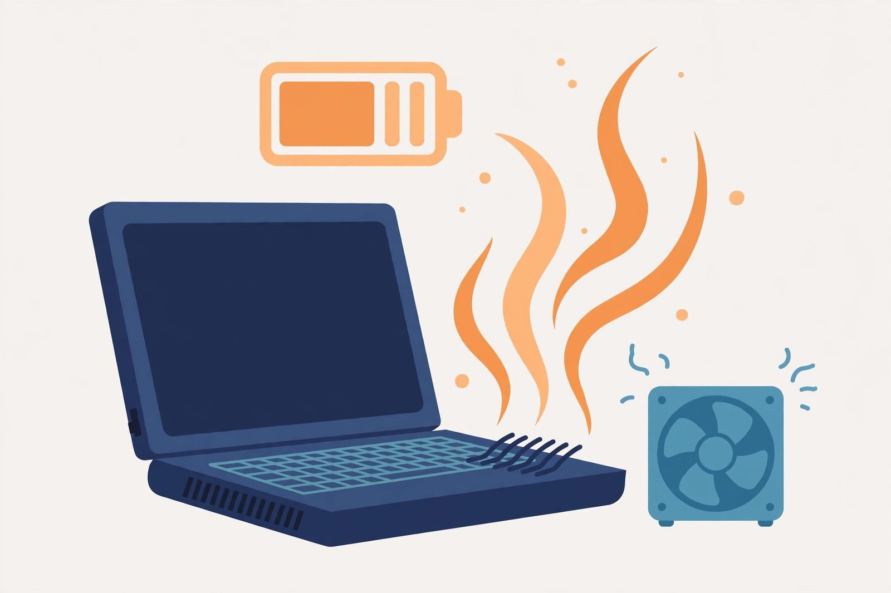
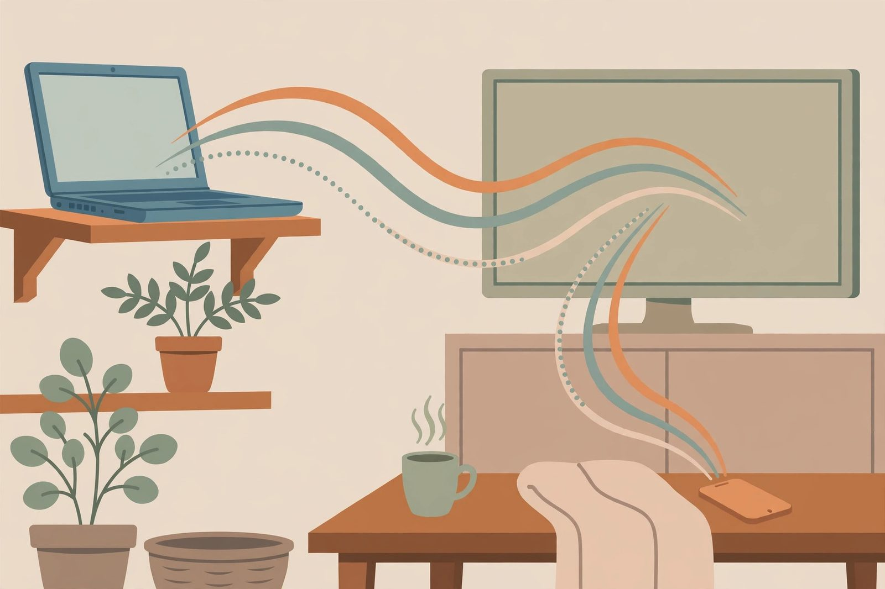

SSD upgrade walkthrough: the single biggest speed boost
Why swapping a spinning hard drive for an SSD transforms an old laptop — plus what to check before you start and how to move your system over.
That dusty laptop in the closet still has life in it
Most "too slow" laptops don't need replacing — they need a solid-state drive, a bit more memory, a clean cooling fan, or a lighter operating system. These guides walk through the fixes that actually matter, in plain language, so you can get a usable computer without buying a new one.
Why swapping a spinning hard drive for an SSD transforms an old laptop — plus what to check before you start and how to move your system over.

More memory helps, but only the right kind. How to find what your laptop takes, how much it can use, and what the installation involves.
When the hardware is fine but the OS is the anchor: lighter Linux distributions and other options that breathe new life into aging laptops.

Cleaning dust from vents, reading battery health, managing heat — the maintenance basics that keep an old laptop running instead of throttling.

Don't let a working laptop gather dust. Set it up as a home media server that streams your movies and music to every device in the house.